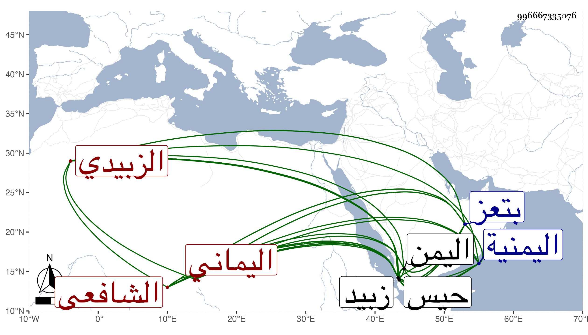

0902Sakhawi.DawLamic.ITO20230111-ara1.EIS1600.996667335076
Biography ID: 996667335076
682
علي بن أبي بكر بن علي بن محمد بن أبي بكر بن عبد الله بن عمر بن عبد الرحمن بن عبد الله بن يعقوب بن جابر بن سعد بن جرى بن ناشر موفق الدين أبو الحسن بن الرضي بن الموفق بن الجمال اليماني الزبيدي الشافعي ويعرف بالناشري وسقت في نسبه من التاريخ الكبير زيادة على هذا . ولد قبيل فجر يوم السبت منتصف ربيع الأول سنة أربع وخمسين وسبعمائة بزبيد ونشأ بها وحفظ الحاوي وتفقه بأبيه وعمه القاضي أحمد وبالفقيه أبي المعالي بن محمد بن أبي المعالي وكذا أخذ عن عمه محمد بن عبد الله المهذب والمنهاج وعن الجمال الريمي وغيره من أهل زبيد ولقي الجمال الأميوطي والأبناسي والزين العراقي والمراغي ونسيم الدين الكازروني فسمع عليهم ومما سمعه على الأميوطي مشيخته تخريج ابن العراقي بل سمع من العز بن جماعة الأربعين المتباينة له ولقي المجد الشيرازي بعد استقراره في اليمن ، وأكثر من الحج والزيارة في شبيبته ثم ولي قضاء حيس في رجب سنة إحدى وتسعين وسبعمائة ثم انفصل عنها واستقر في قضاء زبيد ثم ولي تدريس الأشرفية بها ، وحمدت سيرته في ذلك كله وعظمه السلطان بحيث ذكر لقضاء الأقضية في الممالك اليمنية فقال قد تصدقنا به على أهل زبيد فلا نغير عليهم فيه نعم أقامه فيها حين حج المجد الشيرازي سنة اثنتين وثمانمائة عنه نيابة وكذا أعطاه الأشرف تدريس مدرسته بتعز بل كان يطلع الجبال بطلوعه وينزل التهائم بنزوله ، وكان حسن الخلق شريف النفس عالي الهمة أديبا لبيبا متواضعا حسن السيرة ظاهر السريرة ماهرا في الأحكام محببا عند الخاص والعام كتب بخطه الكثير وبرز في الفنون وألف الفوائدالزوائد لما أدرك في الروضة من الشرح وفي الشرح من الزوائد والجواهر المثمنات المستخرج من الشرح والروضة والمهمات والثمر اليافع وتحفة النافع تشتمل على فوائد منها ضد الأصح من منهاج النووي أنه من الوجهين أو الأوجه وضد الأظهر على هذين القولين أو الأقوال ومنها ما يحصل في المنهاج من العبارة بالأظهر والخلاف أوجه وعكس ذلك وهو كتاب جليل لا يستغني عنه مدرس المنهاج وطالبه وروضة الناظر في أخبار دولة الملك ناصر ومختصر في زيارة النساء للقبور . مات في عصر يوم الاثنين خامس عشري صفر سنة أربع وأربعين بتعز عن تسعين سنة ، وهو ممن أجاز لصاحبنا النجم عمر بن فهد وترجمه الخزرجي في تاريخه وابن أخيه تلميذه العفيف عثمان بن عمر بن أبي بكر بل أرخ وفاته المقريزي .
